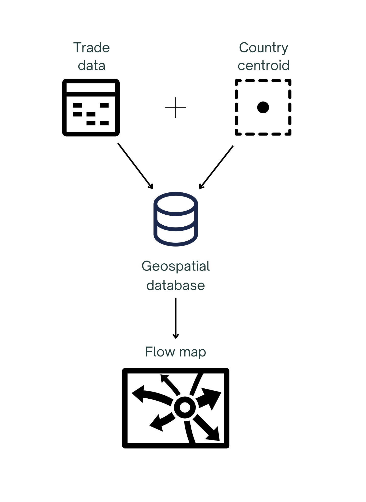

This webpage allows a user to visualize the trade amounts of cereals at food shock levels incrementing from 30% to 90% at both the country and region level. This draws focus to the individual countries that will be most impacted by food trade shocks. Cereals can be defined as edible grains, and include wheat, rice, oat, and corn (Food and Agriculture Organization, 2022). It is especially important to focus on the security of cereal trade routes for two reasons: these grains are a large percentage of global dietary calories – wheat alone contributing 20%, and coarse cereals, which are drought adaptive with high nutritional value, are beginning to be seen as a solution to decreasing global food security (Acevedo et al., 2018, pp. 81-110; Zou et al., 2023).
In a 2022 study by Grassia, et al. titled “Insights into countries’ exposure and vulnerability to food trade shocks from network-based simulations,” food shocks were defined as a decrease in food production at any scale (2022, pp. 1). Common causes of global-scale food shocks are as follows: political instability and violence, crop and livestock destruction, the global climate crisis, economic stress, and forced displacement (World Food Programme FIX)(Hasegawa et al., 2021, pp. 587-589). To simplify calculations, this project took all causes into consideration and defined food shocks as a decrease in food production for any reason.
The flow map displays the FAOSTAT global cereal trade in 2022, the latest year available. It maps import and export directions and quantities (in kilograms) between countries. The category cereal includes cereal straw, husks, unprepared, ground, pressed, or in the form of pellets, cereal preparations, cereals n.e.c. Following the FAO data names, “Reporter countries” are exporters and “Partner countries” importers. The first step of data processing was to make the data into a spatial format where flow lines could be created. This process included several steps
The flow map displays the FAOSTAT global cereal trade in 2022, the latest year available. It maps import and export directions and quantities (in kilograms) between countries. The category cereal includes cereal straw, husks, unprepared, ground, pressed, or in the form of pellets, cereal preparations, cereals n.e.c. Following the FAO data names, “Reporter countries” are exporters and “Partner countries” importers. The first step of data processing was to make the data into a spatial format where flow lines could be created. This process included several steps
The final data products were an Excel table containing all the country and subregion trade routes with their respective yearly exports and imports for 2022 and a second table containing the country names, code (as per the FAO) and coordinates for the Flowmap.city map.
Partner countries are the origin and reporter countries are the destination. This shows the direction in which cereal is travelling. The arrows are proportional to the amount in kilograms of cereal exported/imported. A hover over shows the exact value of the exchange. The arrows can be filtered by country or location points can clicked on to show only the arrows to and from that point.

The limitations of this visualisation include the map projection and the limited data. The map is currently shown in the Web Mercator projection and can not be changed in Flowmap.city. Although good for its familiarity, it is a skewed view of the globe and distorts the shape, size and relative position of every country and continent. The data had to be limited to cereal trade only (as opposed to several food groups) for processing and visualisation purposes leaving room for future developments.
This section lists the resources and data sets used for the map.
Any questions? Get in touch at xxxx@gmail.com